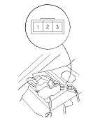
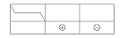

Trunk Lock Actuator Test
Disconnect the 3P connector from the trunk latch switch/trunk lock actuator.

Check actuator operation by connecting power and ground according to the table. To prevent damage to the actuator, apply battery voltage only momentarily.
If the actuator does not work as specified, replace it.
